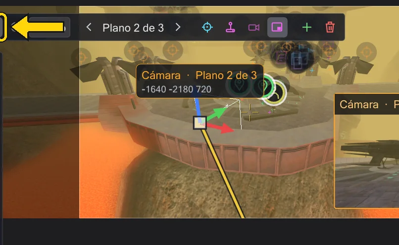
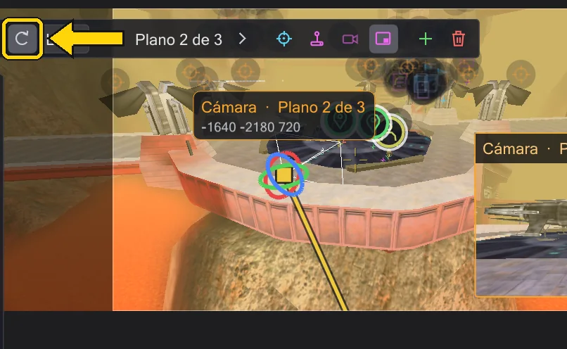

Cámara
Cada MOVE y PAN de cámara del script es un plano que puedes ver, agarrar y volar: el script se reescribe mientras arrastras.

Planos#
En ICARUS un plano es camera ( MOVE, <posición>, <tiempo> ) seguido de camera ( PAN, <ángulos>, <tiempo> ). JK Studio los lee en orden y dibuja cada uno como un símbolo de cámara en el mapa. Pulsa el símbolo de cámara para seleccionar la cámara; la lista Planos de la izquierda muestra cada plano con su tiempo y su tiempo de viaje (se mueve 6.0 s). Pulsa una línea para saltar allí.
- Plano anterior / Plano siguiente recorren los planos; Volar al plano pone tu vista exactamente donde está y mira el plano seleccionado.
- Nuevo plano de cámara aquí añade un MOVE y un PAN en tu vista actual, tras el plano seleccionado. Ajustar a la vista mueve el plano seleccionado adonde estás mirando.
- Eliminar plano lo quita. En Plano seleccionado escribes valores exactos: Posición, Dirección y Tiempo de viaje (0 = un corte).
Mover y girar un plano#
La barra encima de la vista cambia el gizmo: Mover muestra tres flechas y un cuadro en el centro; arrastra una flecha para mover a lo largo de un eje, el cuadro para mover en el plano de la vista. Rotar muestra tres anillos para cabeceo, guiñada y alabeo. Mundo / Local decide si las flechas siguen al mapa o a la cámara. Al soltar se escriben los valores nuevos en el script: un paso de deshacer.




Si la línea de tiempo está entre dos claves cuando agarras el gizmo, se crea una clave nueva en ese momento en vez de cambiar el inicio, como la clave automática de los programas de animación. Mientras pilotas, Intro también pone una clave así (Volar tú mismo un plano (piloto)).
Trayectos de cámara#
La cámara seleccionada dibuja su trayecto: las partes ya voladas en amarillo, el resto en gris. Con muchos planos se llena: Activo muestra solo el movimiento hacia el plano actual y hasta el siguiente, Todos muestra todos. Los dos botones están en el panel de la cámara.
Volar tú mismo un plano (piloto)#
Pilotar te pone en el plano: mantén el botón derecho para mirar alrededor, W A S D para moverte, Q E para bajar y subir. Aplicar escribe la vista en el script, Esc cancela. Mientras pilotas, mueve la línea de tiempo y pulsa Intro (Poner clave (Intro)) para poner una clave tras otra por el camino. Mientras pilotas, la vista usa el zoom del plano y muestra el marco del juego, así encuadras el plano como lo mostrará el juego.
Vista previa y mirar a través#
Vista previa de cámara (en la barra de la cámara seleccionada, arriba a la izquierda en la vista) muestra una pequeña imagen de lo que ve la cámara, abajo a la derecha en la vista; sigue al gizmo mientras arrastras. Pulsa la imagen para mirar a través de la cámara a tamaño completo; mientras miras a través de ella, reproducir la línea de tiempo muestra la cinemática como la mostrará el juego. A través de la cámara en la misma barra lo hace directamente.
Lo que muestra el juego. El juego calcula el campo de visión de una cámara para su propia ventana, así que a través de la cámara la imagen está en un marco con la relación de aspecto del juego: negro fuera, las barras de cinemática y los fundidos dentro; exactamente la imagen que ve el jugador. Fija la relación de aspecto y cg_fovAspectAdjust en Ajustes de la vista → Pantalla del juego. Automático sigue las reglas del juego de las preferencias (Preferencias): Movie Duels funciona a la resolución de tu escritorio con cg_fovAspectAdjust 1 (un ZOOM mantiene su ángulo vertical, las pantallas anchas ven más por los lados), OpenJK empieza a 800x600 con 0 (el ZOOM es el ángulo horizontal). Si dudas, escribe cg_fovAspectAdjust y r_mode en la consola del juego. En la vista libre, un marco claro muestra lo que vería una cámara colocada aquí (zoom 90); desactívalo con Marco del juego en la vista libre. Antes de camera ( ENABLE ) y tras DISABLE el juego muestra la vista del jugador con cg_fov 80; la reproducción y la vista previa hacen lo mismo en los scripts que cambian la cámara ellos mismos. ROLL inclina la imagen y camera ( PATH, ... ) vuela el trayecto ROFF grabado, incluidas sus notas cut, fov, fovzoom y fovaccel.
camera ( ENABLE ) y camera ( DISABLE )) y antes y después está en la sala. En una escena con pista de cámara, la vista previa no lo dibuja en toda la línea de tiempo, salvo que el script se dirija a él fuera de los tramos de cámara (affect ( "player", ... ), en Jedi Outcast kyle, con un paso propio): esa parte sigue visible para que veas la figura que estás moviendo. Solo cambia la imagen. Los objetivos, las torretas, el sonido, las distancias y el desarrollo del script siguen contando con él, y el archivo exportado no cambia. Mostrar jugador en los ajustes de la vista lo muestra exactamente como en el juego; el ajuste se recuerda. Las escenas sin pista de cámara lo muestran como antes.CG_UpdateLookAngles). Una figura que sube a un vehículo (use o SET_VEHICLE en un NPC_Vehicle, también uno que genera un use) se desplaza con él: sube en los fotogramas del servidor del juego, guarda un sable sin hoja activa y luego queda en la postura de reposo; después, un deslizador o un tauntaun gira hacia donde mira su jinete (SET_ANGLES, SET_DYAW en el jinete). En el juego un script no puede conducir un vehículo (SET_NAVGOAL no mueve ni al jinete ni al vehículo), así que la vista previa tampoco. Un deslizador flota como en el juego: tras aparecer cae, rebota hacia arriba y luego oscila suavemente sobre el suelo (PM_HoverTrace); un jinete que sube lo empuja un poco hacia abajo. Quien se baja ya no tiene arma hasta que el script le da una (SET_WEAPON). Animación
Animaciónref_tag o miran a uno. Entonces el panel lo dice, y mover el plano mueve ese ref_tag en el mapa; el script en sí solo lo nombra.